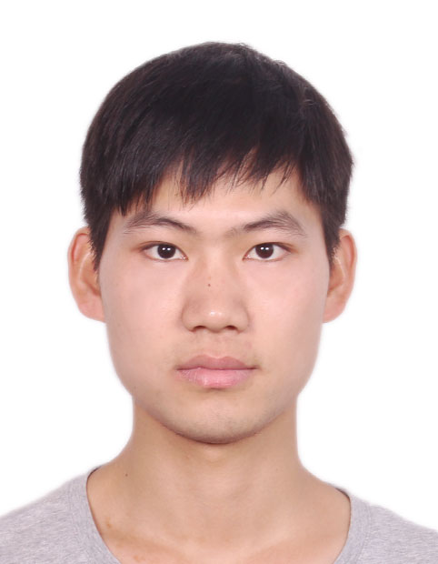

Guolei Sun
Guolei Sun is a PhD candidate under supervision of Prof. Luc Van Gool in Computer Vision Lab at ETH Zurich. Previously, he obtained master degree in computer science at KAUST. After that, he has spent wonderful times as a research engineer at IIAI, working with Prof. Fahad Shahbaz Khan, Prof. Hisham Cholakkal, and Prof. Salman Khan.
|
 |
(2022/04), one paper is accepted to CVPR 2022!
(2021/08), we obtain the best paper award in AIM in ICCV 2021!
(2021/08), two papers are accepted to ICCV 2021!
(2021/04), one paper is accepted to CVPR 2021!
(2020/08), we obtain the first prize in WSSS track of LID workshop in CVPR 2020 and the best paper award!
(2020/08), two papers are accepted to ECCV 2020!
Boosting crowd counting with transformers
Guolei Sun, Yun Liu, Thomas Probst, Danda Pani Paudel, Nikola Popovic, Luc Van Gool
arXiv
[PDF]
Transformer in convolutional neural networks
Yun Liu, Guolei Sun, Yu Qiu, Le Zhang, Ajad Chhatkuli, Luc Van Gool
arXiv
[PDF]
Coarse-to-Fine Feature Mining for Video Semantic Segmentation
Guolei Sun, Yun Liu, Henghui Ding, Thomas Probst, Luc Van Gool
IEEE Conference on Computer Vision and Pattern Recognition (CVPR), 2022
[PDF]
[Code]
Looking Beyond Single Images for Weakly Supervised Semantic Segmentation Learning
Wenguan Wang, Guolei Sun, Luc Van Gool
IEEE Transactions on Pattern Analysis and Machine Intelligence (TPAMI), 2022
[PDF]
[Code]
SwinIR: Image restoration using swin transformer
Jingyun Liang, Jiezhang Cao, Guolei Sun, Kai Zhang, Luc Van Gool, Radu Timofte
International Conference on Computer Vision Workshops (ICCVW), 2021
[PDF]
[Code]
[Best Paper]
Task Switching Network for Multi-task Learning
Guolei Sun, Thomas Probst, Danda Pani Paudel, Nikola Popović, Menelaos Kanakis, Jagruti Patel, Dengxin Dai, Luc Van Gool
International Conference on Computer Vision (ICCV), 2021
[PDF]
[Code]
Mutual affine network for spatially variant kernel estimation in blind image super-resolution
Jingyun Liang, Guolei Sun, Kai Zhang, Luc Van Gool, Radu Timofte
International Conference on Computer Vision (ICCV), 2021
[PDF]
[Code]
CompositeTasking: Understanding Images by Spatial Composition of Tasks
Nikola Popovic, Danda Pani Paudel, Thomas Probst, Guolei Sun, Luc Van Gool
IEEE Conference on Computer Vision and Pattern Recognition (CVPR), 2021
[PDF]
[Code]
Mining cross-image semantics for weakly supervised semantic segmentation
Guolei Sun, Wenguan Wang, Jifeng Dai, Luc Van Gool
European Conference on Computer Vision (ECCV), 2020
[Oral, acceptance rate: 2%]
[PDF]
[Code]
Fixing Localization Errors to Improve Image Classification
Guolei Sun*, Salman Khan*, Wen Li, Hisham Cholakkal, Fahad Shahbaz, Luc Van Gool
European Conference on Computer Vision (ECCV), 2020
[PDF]
[Code]
Camouflaged object detection
Deng-Ping Fan, Ge-Peng Ji, Guolei Sun, Ming-Ming Cheng, Jianbing Shen, Ling Shao
IEEE Conference on Computer Vision and Pattern Recognition (CVPR), 2020
[Oral, acceptance rate: 6%]
[PDF]
[Code]
Fine-grained Recognition: Accounting for Subtle Differences between Similar Classes
Guolei Sun, Hisham Cholakkal, Salman Khan, Fahad Shahbaz Khan, Ling Shao
AAAI Conference on Artificial Intelligence (AAAI), 2020
[PDF]
[Code]
Towards Partial Supervision for Generic Object Counting in Natural Scenes
Hisham Cholakkal*, Guolei Sun*, Salman Khan, Fahad Shahbaz Khan, Ling Shao, Luc Van Gool
IEEE Transactions on Pattern Analysis and Machine Intelligence (TPAMI), 2020
[PDF]
[Code]
Object Counting and Instance Segmentation with Image-level Supervision
Hisham Cholakkal*, Guolei Sun*, Fahad Shahbaz Khan, Ling Shao
IEEE Conference on Computer Vision and Pattern Recognition (CVPR), 2019
[PDF]
[Code]
isaid: A large-scale dataset for instance segmentation in aerial images
Syed Waqas Zamir, Aditya Arora, Akshita Gupta, Salman Khan, Guolei Sun, Fahad Shahbaz Khan, Fan Zhu, Ling Shao, Gui-Song Xia, Xiang Bai
IEEE Conference on Computer Vision and Pattern Recognition Workshops (CVPRW), 2019
[PDF]
[Dataset]